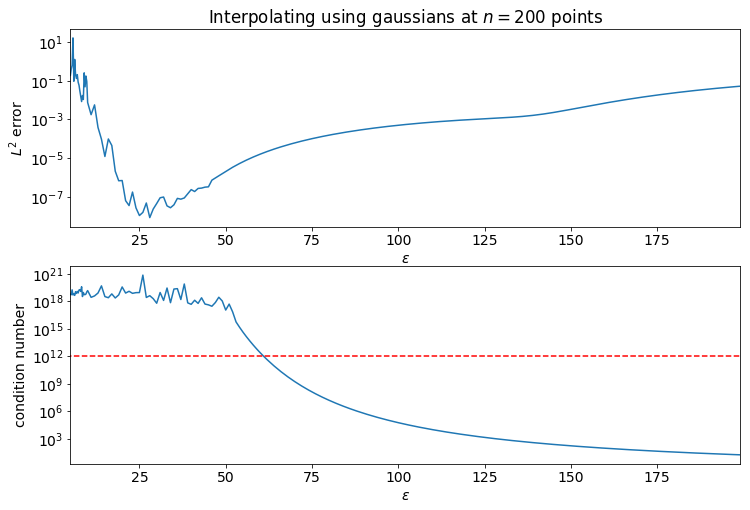

Given a set of distinct points $\{\vec{x}_i\}_{i=1}^n \subseteq D$ and function values $\{f_i\}_{i=1}^n \subseteq \RR$ (or $\CC$) at those points an interpolant $s : D \to \RR$ is a function such that $s(\vec{x}_i) = f_i$ for $i=1, 2, ..., n$. This article discusses RBF interpolation and compares it to polynomial interpolation.
- Polynomial Interpolation
- RBF Interpolation
- Comparison to Polynomials
- Higher Dimensions
- Shape Parameter Selection
- References
Polynomial Interpolation
It is commonly said that two points determine a line. Indeed, in one dimension $n+1$ points (distinct in $x$) determine an $n$th degree polynomial. That is to say that there is a unique polynomial interpolant of degree $n$, and it is straightforward to calculate.
Let $\{(x_i, f_i)\}_{i=0}^n$ denote $n+1$ points such that the $x$ values are distinct. We would like to form the polynomial $p_n(x) = \sum\limits_{i=0}^n a_i x^i$ where $a_i$ are chosen so that it interpolates the points. That is $$ \begin{align*} a_0 + a_1 x_0 + a_2 x_0^2 + \cdots a_n x_0^n &= f_0 \\ a_0 + a_1 x_1 + a_2 x_1^2 + \cdots a_n x_1^n &= f_1 \\ a_0 + a_1 x_2 + a_2 x_2^2 + \cdots a_n x_2^n &= f_2 \\ \vdots & \\ a_0 + a_1 x_n + a_2 x_n^2 + \cdots a_n x_n^n &= f_n \text{.}\\ \end{align*} $$ Notice that coefficients are unkown and that this system is linear in the coefficients. Thus we can form the matrix system $$ \begin{bmatrix} 1 & x_0 & x_0^2 & \cdots & x_0^n \\ 1 & x_1 & x_1^2 & \cdots & x_1^n \\ 1 & x_2 & x_2^2 & \cdots & x_2^n \\ \vdots & \vdots & \vdots & \ddots & \vdots \\ 1 & x_n & x_n^2 & \cdots & x_n^n \\ \end{bmatrix} \vec{a} = \vec{f} $$ for which the solution gives the coefficients of our polynomial. The matrix in this system is known as the Vandermonde matrix and it is proven to be non-singular for distinct $x_i$. Large Vandermonde matrices are quite ill-conditioned however, and finding acurate solutions to this system can be difficlut.
RBF Interpolation
By choosing radial basis functions centered at the points, we can guarantee non-singularity and by adjusting the shape parameter we can optimize the conditioning. Instead of the monomial basis for polynomials, we pick a radial basis function $\phi$ and choose our basis dependent on the points: $\phi_{i}(\vec{x}) = \phi(\norm{\vec{x} - \vec{x}_i})$.
Our interpolant is of the same form: $s(\vec{x}) = \sum\limits_{i=0}^n a_i \phi_i(\vec{x})$. Now our matrix system is $$ \begin{bmatrix} \phi_0(\vec{x}_0) & \phi_1(\vec{x}_0) & \phi_2(\vec{x}_0) & \cdots & \phi_n(\vec{x}_0) \\ \phi_0(\vec{x}_1) & \phi_1(\vec{x}_1) & \phi_2(\vec{x}_1) & \cdots & \phi_n(\vec{x}_1) \\ \phi_0(\vec{x}_2) & \phi_1(\vec{x}_2) & \phi_2(\vec{x}_2) & \cdots & \phi_n(\vec{x}_2) \\ \vdots & \vdots & \vdots & \ddots & \vdots \\ \phi_0(\vec{x}_n) & \phi_1(\vec{x}_n) & \phi_2(\vec{x}_n) & \cdots & \phi_n(\vec{x}_n) \\ \end{bmatrix} \vec{a} = \vec{f} \text{.} $$ This matrix is often written as $$ \begin{bmatrix} \phi(\norm{\vec{x}_0 - \vec{x}_0}) & \phi(\norm{\vec{x}_0 - \vec{x}_1}) & \phi(\norm{\vec{x}_0 - \vec{x}_2}) & \cdots & \phi(\norm{\vec{x}_0 - \vec{x}_n}) \\ \phi(\norm{\vec{x}_1 - \vec{x}_0}) & \phi(\norm{\vec{x}_1 - \vec{x}_1}) & \phi(\norm{\vec{x}_1 - \vec{x}_2}) & \cdots & \phi(\norm{\vec{x}_1 - \vec{x}_n}) \\ \phi(\norm{\vec{x}_2 - \vec{x}_0}) & \phi(\norm{\vec{x}_2 - \vec{x}_1}) & \phi(\norm{\vec{x}_2 - \vec{x}_2}) & \cdots & \phi(\norm{\vec{x}_2 - \vec{x}_n}) \\ \vdots & \vdots & \vdots & \ddots & \vdots \\ \phi(\norm{\vec{x}_n - \vec{x}_0}) & \phi(\norm{\vec{x}_n - \vec{x}_1}) & \phi(\norm{\vec{x}_n - \vec{x}_2}) & \cdots & \phi(\norm{\vec{x}_n - \vec{x}_n}) \\ \end{bmatrix} $$ and is called the RBF interpolation matrix and it is guaranteed non-singular. Since $\norm{\vec{x} - \vec{y}} = \norm{\vec{y} - \vec{x}}$ it is clear that this matrix is symmetric.
Comparison to Polynomials
The following graphs show polynomial and RBF interpolation of the function $f(x) = e^{-\cos(10 \pi x)}$ for differing numbers of equally spaced points. The code used to generate these can be found in this Jupyter Notebook.
In the first pair of graphs, 10 equally spaced points are used. We can see that both versions of polynoial interpolation and RBF interpolation successfuly interpolate, but are poor approximations to the underlying function.
As we increase the number of points, the Vandermonde matrix is the first to become ill-conditioned and fails to interpolate the points.
Increacing to 30 points causes the Lagrange polynomial interpolation to fail as well. At this point the RBF interpolant is a fairly good approximation of the underlying function on the interior of the interval, but has significant error near the end points.
As the number of points increases the RBF interpolant becomes a better approximation of the underlying function.
When using 100 points, the RBF interpolant becomes even more accurate with the largest error being near the end points with an error of roughly $10^{-4}$!
Now that we have established that RBF interpolation remains stable as the number of points increases we can consider convergence rates. The plot below shows the convergence to the underlying function when sampled at $n$ points on the interval $[0,1]$ for the function specified for several choices of RBF.
Higher Dimensions
Polynomial interpolation becomes more complicated when we move into higher dimensions. Firstly, given $4$ points there is no unique second degree polynomial that interpolates them. We could find an interpolant with the basis of $\{1, x, y, x^2\}$ for example, or we could choose a basis of $\{1, x, y, y^2\}$ which will give different interpolants if they interpolate at all! Indeed many selections of points will fail to interpolate with the wrong choice of basis. For example, if all the points are chosen on a circle centered at the origin, and we choose a basis including $\{1, x^2, y^2\}$ then these columns of the matrix will be linearly dependent. This is the famed Mairhuber-Curtis theorem[1][2] and it shows that this will always be a problem in higher dimensions if the choice of basis is independent of the points.
Proof:
Consider a set of points in the plane and choose two of the points (in red below) and construct a closed path (in green below) including both points. Let the points move along the path such that at time $t=0$ they are where they originally were, and at time $t=1$ they have swapped position.
Form the interpolation matrices at time $t=0$ and at $t=1$. The matrices will be the same except that the rows corresponding to the two chosen points will have swapped. A row swap changes the sign of the determinant thus the determinant at time $t=1$ is the negative of the determinant at $t=0$. Since the determinant is a continuous function of $t$ we know that at some time the points were in a position where the interpolation matrix was singular.
This shows that for any choice of basis functions that do not depend on the points there is some set of points for which the interpolation matrix is singular. Consider applying this argument to radial basis funtions centered at the points. When the points swap position, not only have we swapped rows of the matrix, we have swapped the corresponding collumns as well. Since a column swap also changes the sign, the sign is the same, indeed the matrix is exactly the same as before the swap. $\blacksquare$
Radial basis function interpolation is exactly the same in higher dimensions except that the norm used to measure the distance between points must change to be approprate for the dimension.
Shape Parameter Selection
Shape parameter selection matters a great deal and has yet to be mentioned. In the plots above, the RBF interpolant is quite good, but if one chooses a shape parameter poorly this will not be the case. In the image below we see an example where the shape parameter is chosen to be $\varepsilon = 10^4$ and, though it interpolates, it is a terrible approximation to the function.

The particular RBF used is $\phi(r) = e^{-(\varepsilon r)^2}$ and is known as the gaussian (the normal distribution or the bell curve). When $\varepsilon$ is large, the gaussian is essentially flat, except at zero where it forms a sharp peak. The sum of such gaussians centered at our points is essentially zero everywhere with sharp peaks at our points. Our interpolation matrix looks like the identity since the diagonal entries have a distance of 0 which evaluates to 1, and the off diagonal entries are not $0$ so they evaluate to essentially 0.
The identity matrix has a condition number of 1. As the shape parameter decreases, the off-diagonal entries of the RBF interpolation matrix grow, the condition number of the matrix increases, and the interpolant becomes a better approximation of the underlying function. That is until the RBF matrix becomes sufficiently ill-conditioned. It is good practice to select a shape parameter so that the condition number of the matrix is "on the edge of ill-conditioning." More specifically, it is chosen so that the condition number is large, but several orders of magnitude below the inverse of $\varepsilon_M$ (machine-epsilon).
The plots below show the error in interpolating $f(x)=e^{x\cos(10 \pi x)}$ at $n=200$ equally spaced points on the interval of $0 \leq x \leq 1$. Notice how as $\varepsilon$ decreases the error smoothly decreases and the condition number smoothly increases until the condition number reaches $10^{16} = 1/\varepsilon_M$.
References
- John C. Mairhuber. On haar's theorem concerning chebychev approximation problems having unique solutions. Proceedings of the American Mathematical Society, 7(4):609–615, 1956. URL: http://www.jstor.org/stable/2033359.
- Jr. Philip C. Curtis. N-parameter families and best approximation. Pacific Journal of Mathematics, 9(4):1013–1028, 1959. URL: https://msp.org/pjm/1959/9-4/pjm-v9-n4-p04-s.pdf.